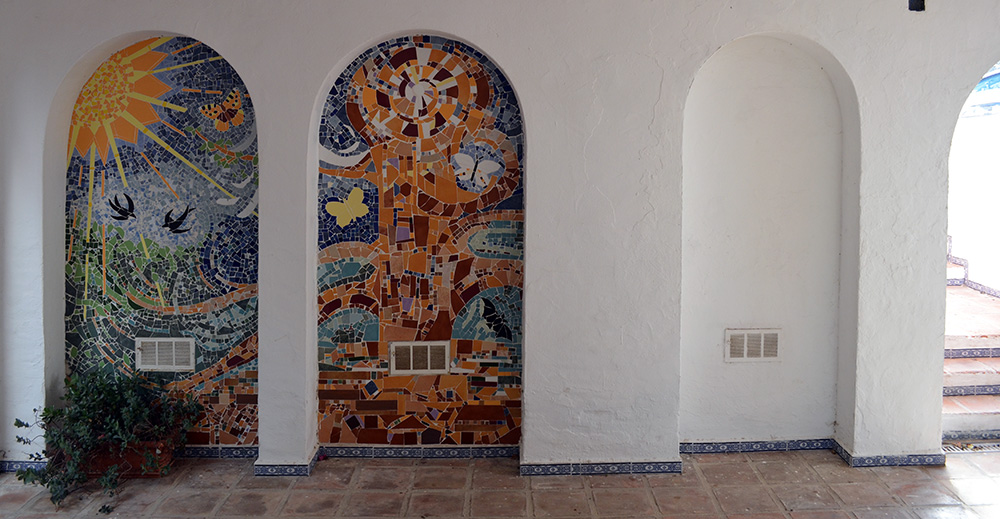

Mosaics
While living in Seville, the renowned Seville artist, Santiago del Campo, was commissioned to carry out a gigantic mosaic which was to be place in the Sánchez Pizjuan football stadium to commemorate the 1982 World Cup. I was honoured to be invited to join the team to carry out such a mammoth task, and this experience fired a new interest in mosaics which has continued to this day.
Not only have I upcycled objects, such as disused lamps and tables, with mosaic designs, but I have also done a series of large mosaic panels (2.40m x 1.20m) in the area where I live. The first panel was simply recycled materials on the theme of water and rocks. The second work is a triptych on the theme of the Tree of Life. The tree stands in the central panel with the day and the sun on one side incorporating butterflies and swallows and the moon and night with bats and owls on the other. A fourth panel is on the theme of the banana plant.
This activity is a way of recycling old tiles but also of incorporating tiles with a variety of textures. I find it very satisfying. Mosaics act as a parallel to the painting process.
